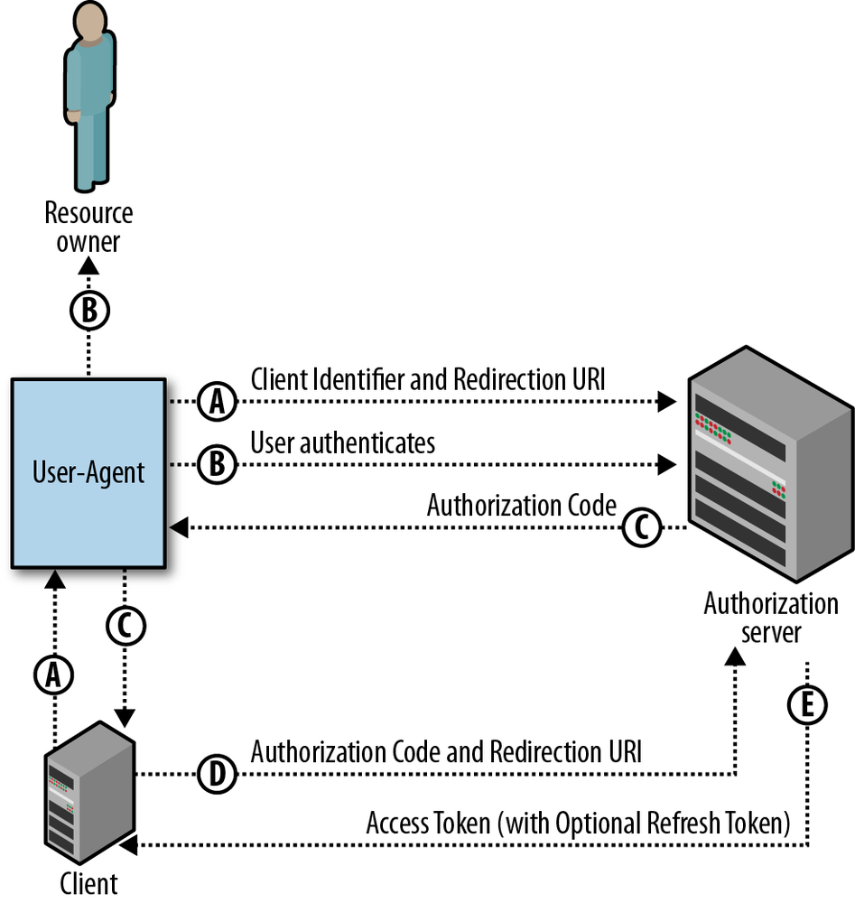

class: center, middle # Intro to OAuth2 --- ## Authentication and Authorization There are two related concepts that must be employed to properly secure an API: **authentication** and **authorization** -- **Authentication** is the process by which the identity of a user/requester is determined. -- **Authorization** is the process by which it is determined what an authenticated user is allowed to do. -- Remember that authentication is about _identity_, authorization is about _permissions_ --- ## Review of Key Authentication In this scheme, each API user must have key (a string of characters) that they submit in the request. -- - The key may be placed in the `Authorization` header, or in the URL as a query parameter (e.g. `http://api.mydomain.com/some_endpoint?api_key=abcd1234`) -- - Permissions may be granted on an per-user basis -- - A key is typically obtained by registering with the API provider using a traditional user account --- ## Problems With Key Auth - API users have to obtain a key directly from the API provider, usually through a web portal -- - There's no mechanism for expiring and renewing keys -- - While key's can provide per-user access to data, it's not reasonable for an API client to obtain keys to access individual user data (e.g. a key to access your Facebook account) --- ## OAuth2 to the Rescue - Provides authentication for users using an external site w/o giving a third party your password -- - Allows for access to user data at a third party -- - Can be read/write, read-only, or provide more complex access schemes (access by data type or function) -- - Prevents devs from having to use multiple proprietary authentication and authorization protocols when building their apps --- ## Tokens Good, Passwords Bad OAuth2 controls access to services by issueing **tokens** which are similar to keys but carry additional power -- We _could_ just give an application our account credetials, so it could, say log into Facebook for us. This wouldn't be a good idea though. - Why not use passwords? - Trust: what if the app stores your password or shares with another party? - Using passwords is easier to exploit via phishing - Can't restrict access to data when not using passwords - Access turned off when passwords are changed - A user can't easily revoke access --- ## OAuth Roles - **Resource server**: Hosts user-owned resources that are protected by OAuth. This is typically an API provider that holds and protects data. -- - **Resource owner**: The user of an application, the resource owner has the ability to grant access to their own data hosted on the resource server. -- - **Client**: An application making API requests to perform actions on protected resources on behalf of the resource owner and with its authorization. -- - **Authorization server**: Gets consent from the resource owner and issues access tokens to clients for accessing protected resources. Can be the same as the resource server. -- - **User Agent**: How the user accesses the client --- ## OAuth Roles  --- ## Using OAuth as a Client Using OAuth as a client requires **application registration** with the OAuth provider. -- The provider gives you a **client ID** and a **client secret** that are required for interating with the provider. -- **Keep the client ID secret! Duh!** --- ## Client profiles There are a few types of OAuth clients: - Server-side app - Client-side app - Native app (desktop or mobile) - service-to-service app --- ## Confidential vs. Public Clients We can subdivide these into **confidential** and **public** -- - Confidential: Server-side web apps. These can keep tokens secret from resource owner -- - Public: Client-side web apps, mobile apps. These can't reliably keep tokens secret -- **Dumb question**: Why would you want to keep the token secret from the user? --- ## Access token (or "Bearer Token") - Sent by the client to the resource server to access protected resources - May be valid for a short period (implementation specific) - Can be verified by the authorization server or the resource server --- ## Refresh token - Valid for a longer period - Used to request a new access or identity token when the current one expires - The process is transparent for the resource owner - When a refresh token expires, the client must re-authenticate - Usually involves a database lookup, so authorization can be revoked --- ## Grant Types There are 4 types of **grant types** used for issueing tokesn to differnt types of clients -- - Auth Code (Server-side Web Apps) -- - Password (Native Mobile Apps) -- - Implicit (Client-side Web Apps) -- - Client Credentials (Service-to-service Apps) --- ## Auth Code Flow Perhaps the most widely used and discussed flow. Also sometimes called the "OAuth Dance" -- - Default and most secure flow: no access token on the browser, no user/ password sent to client -- - The client must securely be able to hold the client ID, client secret and tokens -- - Called 3 legged OAuth because the identity of the three main actors is checked (authorization server, resource owner, client) --- ## Auth Code Flow  --- ## Password Flow Sometime called “native mobile app” or “resource owner password” flow - For cases when the resource owner trusts giving the password to the client (e.g. same company) - Usually the resource owner only trusts the Authorization Server login component - The client uses the username and password when requesting tokens, but does not store them after that – Only the access and refresh tokens should be stored by the client - Uses credentials as authorization- no authorization endpoint is used - Example: PCF CLI --- ## Password Flow  --- ## Single-page JS App Flow (Implicit Grant Type) - For cases where the client can’t securely hold the refresh token and ClientSecret (e.g. JavaScript in the browser) - No refresh tokens or ClientSecrets are used - Access tokens are issued directly from the authorization endpoint- no authorization code is used - Only the ClientID and `redirect_uri` are sent when requesting tokens - The `redirect_uri` sent must match the `redirect_uri` sent when originally registering the client - Simple but less secure- only one call to the authorization endpoint is necessary --- ## Implicit Flow  --- ## Service-to-Service App Flow (Client Credentials Grant Type) - Also known as 2-legged OAuth - For cases where the client is also the resource owner, or there is no resource owner - User credentials not necessary- client credentials are used for the authorization grant - Client must register with the OAuth server, and receives a ClientID and a ClientSecret - Client then sends the ClientID and ClientSecret to the token endpoint - Client must securely keep the ClientID, ClientSecret, access token and refresh token - No authorization endpoint or `redirect_uri` is used --- ## Client Credentials Flow  --- ## OAuth1 vs. OAuth2 OAuth2 supersedes the OAuth1 spec, and attempts to solve some issues with it - OAuth2 provides for non-client/server flows -- - OAuth2 removes the more difficult cryptographic signature portion of the spec (though some OAuth2 services support or require it) -- - OAuth2 uses bearer tokens in place of signing --- ## Request Signing Vs. Bearer Tokens If not signing requests, remain secure by: -- - Using HTTPS -- - Verifying that the cert hostname matches the URL being accessed -- - Veryfying each cert in the chain up to a trusted cert -- - Make sure the cert bundle on the server is secure --- ## How Tokens Are Sent - Auth header -- - Query param -- - Request body **Note:** Prefer auth header b/c: headers are rarely cached or logged and it's universally supported according to oauth spec --- class: center, middle # Demo ---